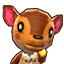

More recently, I started playing New Horizons, and I've managed to accumulate over 2000 hours on it since its release.
ANIMAL CROSSING
More recently, I started playing New Horizons, and I've managed to accumulate over 2000 hours on it since its release.
These are my favorite characters! No real reason, I just like cute things.
Kidd

Fauna
Ruby
As a memento of my adventures in Animal Crossing, here are some pictures of my island in New Horizons!
would you like to continue exploring? or go home?